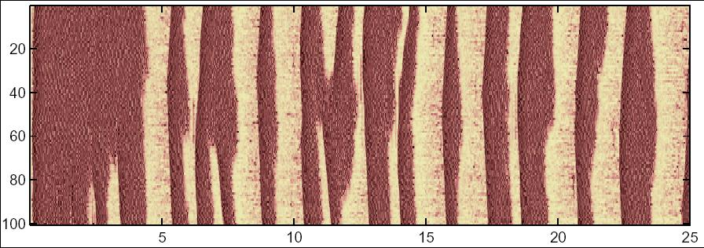

README
for the model associated with:
Bazhenov M, Timofeev I, Steriade M, Sejnowski TJ (2002)
Model of thalamocortical slow-wave sleep oscillations and transitions to activated states.
J Neurosci 22:8691-704
This model is written in C++. The following instructions work have worked under redhat linux 9 although
the code should work with little or no modification on other platforms with ansi compilers.
How to compile:
Change to the directory in which you have unziped the archieve file, then type:
g++ neur271.c rk.c -lm -O4 -ffast-math -o neur271
How to run:
./neur271 input27 > tmp &
The run (~7.5 hours on a 800 MHz xeon redhat linux pc) creates data files
equivalent to figure 6 in the paper, e.g. one can find in the time_cx file
25 seconds of 100 pyramidal cell's activity:

Correspondence:
Dr. Maxim Bazhenov, The Salk Institute,
10010 North Torrey Pines Road, La Jolla, CA 92037.
E-mail:
bazhenov@salk.edu